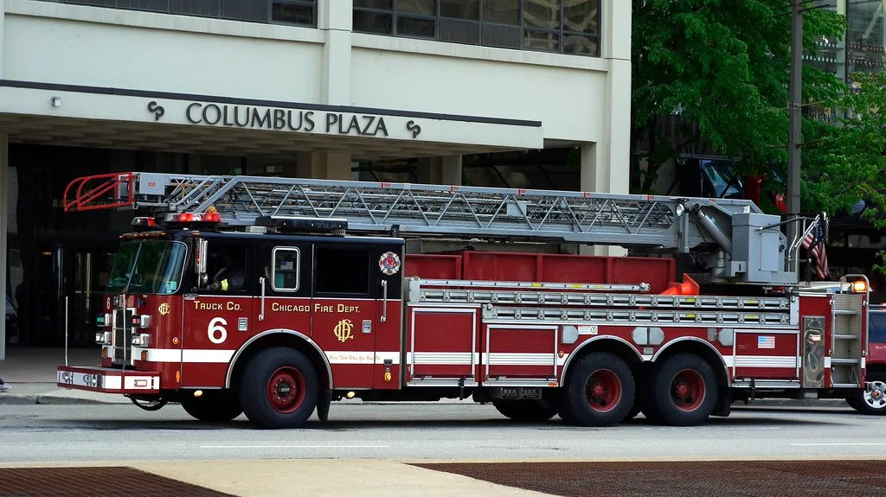
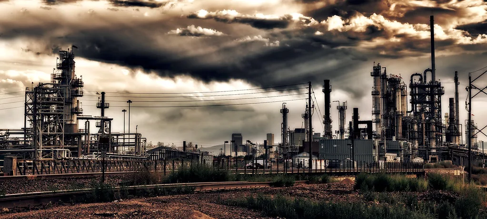

영등포 선유도역 인근 식품공장서 암모니아 누출…인명피해 없어
21일 오전 5시 30분쯤 서울 영등포구 선유도역 인근의 한 식품 공장에서 암모니아 가스가 누출되는 사고가 발생했다. 신고를 받은 소방당국은 즉시 현장에 출동해 공장 내부를 통제하는 한편, 가스 확산을 막기 위해 물을 뿌리는 등 안전 조치를 진행했다. 다행히 작업자를 포함해 현재까지 확인된 인명 피해는 없는 것으로 파악됐다.
사고 당시 공장에서는 냉동·냉장 설비 등에 사용되는 암모니아가 배관이나 설비 일부에서 새어 나온 것으로 추정되고 있다. 이른 새벽 시간대에 사고가 발생하면서 공장 인근 주민들이 자칫 자다가 냄새에 놀랄 수 있는 상황이었으나, 소방당국이 신속히 출동해 초기 대응에 나서면서 큰 혼란 없이 상황이 관리된 것으로 전해졌다.

영등포구는 사고 직후 재난문자를 통해 인근 주민들에게 관련 사실을 알리고 나섰다. 구청 측은 문자에서 "선유도역 인근 공장에서 암모니아 가스가 누출됐다"며 "악취가 날 수 있으니 주민들은 에어컨 가동을 중지하고 실내에서 대기해 달라"고 당부했다. 아울러 사고 현장 주변을 지나는 차량에 대해서는 우회를 요청하는 안내도 함께 이뤄졌다.
암모니아는 특유의 자극적인 냄새를 지닌 물질로, 고농도로 노출될 경우 눈이나 호흡기에 자극을 줄 수 있어 식품·냉동 업계에서는 취급에 각별한 주의가 요구되는 물질로 꼽힌다. 이 때문에 소방당국은 가스 농도를 낮추고 확산 범위를 최소화하는 데 초기 대응의 초점을 맞췄으며, 안전이 확인될 때까지 공장 내부 출입을 통제하는 조치를 이어갔다. 현장에는 화학물질 누출 사고에 대응하는 특수 장비를 갖춘 구조대도 함께 투입돼, 누출 지점을 좁혀가며 확산 여부를 지속적으로 측정한 것으로 전해졌다.

경찰과 소방당국은 사고 발생 시각이 새벽 시간대였던 만큼, 인근을 지나던 시민이나 초기 출근길에 나선 주민들의 안전에도 각별히 신경을 썼다고 밝혔다. 다행히 가스가 공장 외부로 크게 확산되기 전에 초기 진화와 통제가 이뤄지면서, 우려했던 대규모 대피 상황으로까지는 번지지 않은 것으로 파악된다.
소방당국은 정확한 누출 경위를 파악하기 위해 공장 내부 설비와 배관 상태를 점검하고 있다. 아직까지 사고 원인이 노후 설비의 문제인지, 밸브나 이음새 부위의 결함인지 등은 구체적으로 확인되지 않은 상태다. 당국은 안전 조치가 마무리되는 대로 정밀 조사를 통해 누출 지점과 원인을 규명할 방침인 것으로 전해졌다.
이번 사고를 계기로 식품·냉동 업계 전반의 암모니아 냉매 설비 안전 관리에 대한 경각심도 다시 한번 부각되고 있다. 암모니아를 냉매로 사용하는 냉동·냉장 시설은 전국 각지의 식품 공장과 물류창고 등에 다수 운영되고 있는 만큼, 노후 설비에 대한 정기 점검과 유지보수의 중요성이 거듭 강조되는 대목이다.
관할 소방서와 구청은 이날 사고와 관련해 추가적인 피해 확산 여부를 계속 모니터링하는 한편, 정밀 조사 결과가 나오는 대로 필요한 후속 조치에 나설 예정이라고 밝혔다. 다행히 인명 피해 없이 상황이 마무리된 만큼, 당국은 이번 사고를 계기로 유사 시설에 대한 안전 점검을 확대하는 방안도 함께 검토하고 있는 것으로 알려졌다.